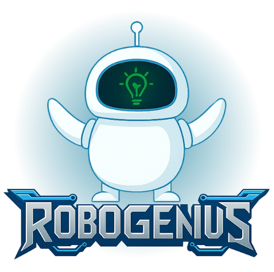

RoboGenius est un club de robotique de l'ENSA Fès, réunissant des étudiants passionnés par l'innovation et la technologie.
Le club permet à ses membres de développer leurs compétences techniques et de réaliser des projets robotiques en équipe.
RoboGenius est né d'une idée ambitieuse : transformer un parapluie ordinaire en parapluie volant.
Cette idée a donné naissance à une communauté d'étudiants passionnés par la robotique, la création et l'innovation.
Fondateur du club RoboGenius, il est à l'origine du projet pilote du parapluie volant et a contribué à réunir les premiers membres du club à l'ENSA Fès.